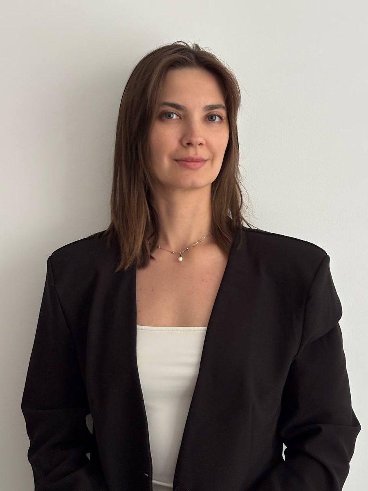

Marketing & Visual Designer · Bratislava
I make complex products look clear and sell.
6+ years of marketing design for IT, SaaS, fintech and EdTech: case studies, executive decks, landing pages and ad creatives.

Status
Open to new projects
Remote or freelance: marketing design, presentations, landing pages, ad creatives.
Experience
6+ yrs
60+ case studies, 30+ executive presentations (one for a Big 4 firm) and dozens of landing pages.
Featured · E-commerce
Honna London
Website redesign.
Tools
- Figma
- Photoshop
- Illustrator
- Adobe CC
- AI tools
She doesn’t just make things look good, she makes them work.
Industries
- IT outsourcing
- SaaS
- Fintech
- EdTech
- iGaming
- E-commerce
Elsewhere
Got a project?
Let’s talk
kateryna.katarovska@gmail.comSelected work
9 projects · BehanceKind words
3 recommendationsStarted in newsrooms. Stayed for the layout.
2018 — 2026About
- 2026 — now
Syndicode
- 2019 — 2026
Onix-Systems
- 2018 — 2019
- Before 2018
Contact
Let’s make it clear.
Tell me about your product, deck or campaign.
kateryna.katarovska@gmail.com
LinkedIn